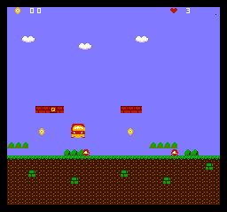

Introducing NEScript
It started, like most things these days, with a prompt:
I want to learn how to write new games for the NES. What do I need to learn?
The Nintendo Entertainment System was released to the US in 1985, and was a staple of my childhood. I don't know exactly when our family got one, but I remember spending hours upon hours, for days on end, playing all the classics with my brother: Mario, Mega Man, Contra, Marble Madness, River City Ransom, Battletoads, and dozens more.
I remember pausing to go to bed, hoping the game would still be on when I woke up, since at that time you couldn't even save your game. I remember trading Mega Man 2 passwords with friends. I remember endless ads for the Game Genie in my comic books.
Eventually, I grew up and the NES didn't, and I got into other hobbies: more comic books, soccer, computers, and more. The rest is history. But every few years I'd keep coming back to play one of those classics on an emulator. Eventually I had kids and got to share my love of Mario with them. They prefer the newer games, and seem to find the classics boring. There's no accounting for taste I guess.
As expected (and no doubt, planned) I watched the latest Mario movie awash in a glow of nostalgia.
I knew that there was a thriving community online, and in real life, of other NES and retro gaming enthusiasts, lovingly documenting and restoring hardware, maintaining and improving emulators, and even writing new games for a 40-year-old hardware platform, for pure love of the game (pun intended).
Being ~30 years removed from the most serious depths of my NES addiction, I was only tangentially aware of these lovable nerds. Sitting in the theater I wondered whether I could learn what they do, and maybe even become one myself. On the way out of the theater I asked Claude what it would take to get started.
NES game development in 2026
And there was a lot to learn. The NES hardware is very well understood, having 40 years of hackers to tear it apart and learn its secrets. Compared to modern computers, it's a heavily constrained environment: 2KB of RAM, a CPU running at about 1.79 MHz, a hard cap of 8 sprites per scanline, and cartridge ROMs that originally topped out at 40KB (that's kilobytes, or millionth of a gigabyte, for you whippersnappers).
The NES homebrew community has developed an impressive number of tools to make writing games easier. Instead of having to write raw 6502 Assembly, they have cc65, a C toolchain to produce the raw assembly instead. There's even a powerful IDE available on Windows. But even with these tools in the toolbox, programmers still have to be aware of the specific hardware constraints, which steepens the learning curve quite a bit. From what I could glean from the docs, setting up the toolchain itself requires more than a few steps. It was a lot to learn all at once, before you could even draw your first sprite to the screen, let alone make it move, jump, make sounds, and so on. The path from idea to phyiscal cartridge felt long indeed.
I wondered: what if I could make all of this easier for the uninitiated, like me? Not only a simpler toolchain, but an easier language, designed from the beginning for one goal: to build games for the NES. Instead of repurposing a (granted, well-trodden and widely-known) general-purpose language like C and making programmers remember to live within the hardware constraints, I wondered if it might be possible to design a language and compiler to make it more pleasant to live within the constraints, and importantly, help keep you from going outside those constraints.
NEScript
After a couple more hours of going back and forth with Claude to better understand the problem, we eventually came up with a solution: NEScript, a new purpose-built programming language to develop NES games, and a compiler written in Rust to transform those programs into optimized NES-compatible 6502 Assembly.
NEScript attempts to learn from all of the patterns and hacks time-honored techniques adopted over time by the cc65 and homebrew NES communities, and paves the cowpaths all the way into the language where possible.
This includes things like language-level game state transitions (splash screen, followed by level 1, followed by level 2, followed by game over, etc.), native u16 and i16 types, a built-in method to get ~random values from the PRNG, and much more.
Sprites can be extracted from PNG files in the codebase, or defined inline in code. Same with sounds and music. Collision detection (i.e., when Mario stomps on a Goomba) is built in. Color palette definitions and changes are built in. When you need to, you can define an inline asm { … } block, and reference variables from inside that block.
NES hardware limitations around the number of sprites that can be drawn on each scanline are accounted for by the compiler -- the compiler will warn, and can automatically trigger flickering sprites so they don't just disappear entirely. This was always possible with cc65, and with raw Assembly before it, but it was difficult, brittle, time-consuming, and very un-fun to say the least.
I don't know nearly enough about the homebrew community's wants and needs to know whether this is compelling to anybody but me, but to me, this takes NES development from "it will take a long time for me to understand enough to draw a sprite" to "I can easily read and write the code to draw a sprite" and even "I can vibecode a real complex NES game", which includes being able to read the code well enough to know whether it's totally off-base.
How it was built
I'll be completely transparent: NEScript was mainly designed and built using Claude Code from my phone.
The first phase of development was a back-and-forth conversation with Claude to design the basic language features, and to produce a phased engineering plan to implement the design. This was design.md and plan.md in the repo, which Claude Code was able to implement in short order. This included the language docs, the compiler with good unit and integration test coverage, and some examples demonstrating working programs.
After this I went through a couple rounds of polish and bug squashing: I asked Claude to do a code review of what it found, identify testing gaps and bugs, and fix those.
Inching Toward Correctness
Just having Claude write code and tell me it worked was not going to cut it. Claude is just as capable of writing bugs as it is capable of writing bugs that assert that bug is correct.
Before we built more complex games with NEScript I wanted to make sure it wasn't just producing garbage. This meant I needed to ensure its .nes output constituted an actually-playable game.
To ensure this, I relied on https://jsnes.org/, an NES emulator in pure JS. The reason I chose this was that Claude is pretty strong at writing and debugging Puppeteer tests, where it runs an HTML/CSS/JS page in a headless Chrome browser and pokes at it. Just loading the example ROMs in JSNES in a browser uncovered a number of correctness bugs in the output, and Claude easily understood how to close the gap.
Puppeteer also takes screenshots, records audio and GIFs, which means that my tests can surface actual images of games being played, which Claude can then use to debug UI bugs like misaligned sprites. This was especially useful when handling more than the max number of sprites per scanline -- our PNG screenshots were able to exhibit the behavior perfectly, and Claude used them to ensure sprites weren't just silently dropped.
The screenshots and GIF recordings are committed to the repo, so when some behavior changes the visible output, Claude can see that effect and either determine that change is expected, or use it as a signal that there might be some bug. Perhaps surprisingly, during code optimization passes, screenshots change slightly because frames may render quicker, meaning sprites move slightly faster.
The recorded GIFs are also great examples for the README, to give readers an idea of what's possible with NEScript:

In addition to tests using JSNES, since the NEScript compiler is also capable of emitting .dbg files for use with emulators like Mesen, there are tests that run Mesen to ensure those outputs are valid and usable. JSNES and Mesen are the test of "ground truth" correctness: does the compiled program load, execute, and work as intended?
For a good long while (a few days), the development loop for the project was:
- design and attempt to build a whole "production-quality" game, to exercise as many features as possible
- iterate on the game code until it was \~good
- identify compiler bugs and language gaps uncovered by attempts to improve the game
- fix those bugs and gaps
- code review and polish
- merge, goto 1
The term "game" is pretty broad here. In addition to a simple platformer, and a simple card game, Claude also wrote a functional SHA-256 hasher. That's right, a 25-year-old cryptographic hashing algorithm ported to a 41-year-old hardware platform, implemented in a week-old programming language, developed autonomously by an LLM. Developing this uncovered a number of performance optimizations that made every example multiple frames faster.
And that's sort of where the project is today: have some idea (there's a backlog in the repo), iterate on it to uncover compiler bugs and missing language features, document and/or fix those, rinse, repeat.
This is, at a high level, what any software project does, the real only difference is the speed of this loop. Before AI agents, each cycle of this loop could take weeks or months, which is long enough that it could take days or weeks just to decide what to tackle next.
In Conclusion
I think I got basically everything I wanted out of my original curiosity, and more: I learned a lot about the NES homebrew ecosystem, its constraints and difficulties, and was inspired as always to see what people were able to create within those constraints.
I was also able to produce something a lot closer to a real playable game in a lot less time than it would have taken me otherwise -- especially since prior experience tells me I probably would have given up long before writing anything meaningful to the screen.
And in the process, I produced something that may be useful to others interested in traveling this road in the future. Anecdotally, it seems like Claude is better at writing NEScript than it is at writing NES Assembly, even thought it's a brand new language it's never seen before. NEScript is more token-dense, and harder to mess up than Assembly, and faster to give more targetted feedback when it does get messed up.
If NEScript is itself useful to someone, that's great, and even if it's just an experiment that proves that some higher-level development environment is within reach, even if it's not NEScript itself, that's great too!
If you're reading this and want to try it out, feel free to give it a shot and file bugs or issues as you find them. If you want to point an agent at addressing any of the future work, that's fine too -- the bar for acceptance will be tests, runnable examples, and screenshots or recordings that show things working like you expect.
I probably won't continue developing NEScript except when the itch strikes, so if you want to take it in a new direction feel free to fork it.